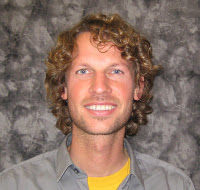

Lab Members

Aaron Blackwell
Associate Professor
Office: 2049 HSSB
Email: blackwell@anth.ucsb.edu
Office Phone: 805-893-4234
Professor Aaron Blackwell is a human biologist and behavioral ecologist whose research examines health and life history in small scale Amazonian societies. His research examines how immune function develops in populations exposed to high levels of pathogens and how early life experiences shape health later in life in both small scale and industrialized populations. His research incorporates both field and laboratory work to examine biological outcomes. Professor Blackwell is director of the UCSB Ecological Immunology Laboratory and co-director of the Human Biodemography laboratory, with Michael Gurven.
Graduate Students

Current and Past Undergraduates
Nikka Keivanfar |
Sarah Bay |
Marilyne Tamayo |
Robin Pisor |
Jason Marks |
Alan Fregoso |
Collaborators
Ben Trumble Lab Manager |
Michael Gurven Biodemography Lab |
Corina Logan |
Adrian Jaeggi |
Tsimane Project Members |
Shuar Project Members |